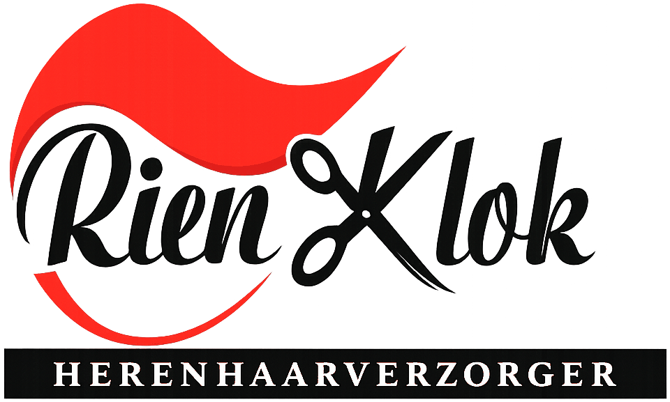

Rien Klok — Heren Haar Verzorger in Amsterdam

Knippen zoals het hoort.
Voor heren die gewoon goed geknipt willen worden: rustig, persoonlijk en met vakmanschap.
Afspraak maken? Gewoon even bellen
06 28410433Bel tijdens openingstijden
Dan weet u meteen waar u aan toe bent.
Openingstijden
De zaak is geopend op woensdag tot en met zaterdag.
| Maandag | Gesloten |
| Dinsdag | Gesloten |
| Woensdag | 10:00 – 17:30 |
| Donderdag | 10:00 – 17:30 |
| Vrijdag | 10:00 – 17:30 |
| Zaterdag | 10:00 – 15:00 |
| Zondag | Gesloten |
Buurtklassieker
van de Rivierenbuurt
Maasstraat 175
1079 BG Amsterdam